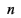
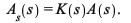
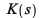
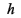
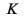
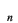
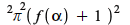
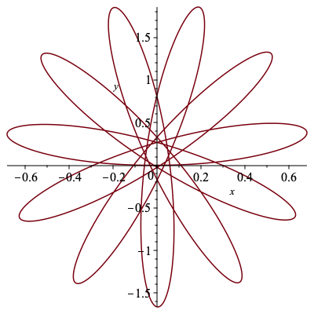
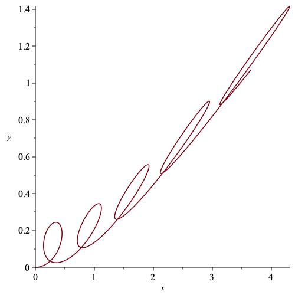

Reconstruction from affine curvature using Picard iterations
The definite integrals in the Picard iteration are approximated with the trapezoid method.
| > | with(LinearAlgebra): |
| > | trapezoid_approx := proc(L,s)
local M,i; # Input an array of function values L and a mesh s # Output a new array of function values approximating the integral using the trapezoid method M := Array(1..ArrayNumElems(L),fill=Matrix(Dimension(L[1]))): for i from 2 to ArrayNumElems(L) do M[i] := .5*(L[i]+L[i-1])*(s[i]-s[i-1])+M[i-1]: end do: return M: end proc: |
The following procedure approximates  Picard iterations for the matrix equation Values of are given at  equally spaced mesh points from a given matrix function, in the below examples is the affine Cartan matrix.
| > | PicardIt := proc(K,n,s_0,s_L,mesh_pts)
local A, U, k, s, i, g, gx, gy, h; # Input, matrix function K, number of PIs, starting point, ending point, number of mesh points s := Array(1..mesh_pts,fill=s_0): #[s_0]: k := Array(1..mesh_pts): #[evalf(K(s_0))]: k[1] := evalf(K(s[1])): h := (s_L - s_0)/(mesh_pts-1): for i from 2 to mesh_pts do s[i] := s[i-1] + h: k[i] := evalf(K(s[i])): end do: U := Array(1..mesh_pts,fill=Matrix([[1,0],[0,1]])): A := U: for i from 1 to n do A := U + trapezoid_approx(Array(k.A),s): end do: g := trapezoid_approx(A,s): gx := [seq(g[i][1,1],i=1..mesh_pts)]: gy := [seq(g[i][1,2],i=1..mesh_pts)]: return gx,gy: end proc: |
A set up of the smooth bump functions that are used in constructing the examples seen in Section 4
| > | h := (r_1,r_2) -> exp(-1/(r_1-t))/(exp(-1/(r_1-t))+exp(-1/(t-r_2))):
g := (r_1,r_2) -> -exp(-1/(r_1-t))/(exp(-1/(r_1-t))+exp(-1/(t-r_2)))+1: f := (r_1,r_2) -> piecewise(t<=r_1,0, t<(r_1+r_2)/2, g(r_1,(r_1+r_2)/2), t=(r_1+r_2)/2, 1, t<r_2, h((r_1+r_2)/2,r_2),0): |
Two examples of reconstructions of curves with affine arclength parameterized affine curvatures μ(α) = nperiodically extended from Section 4 with varrying values for n.
| > | n := 2/5: |
| > | mu1 := s -> eval(n*Pi*(f(0,2)+1),t=s-2*floor(s/2))^2: |
| > | K1 := s -> Matrix([[0,1],[-mu1(s),0]]): |
| > | gx1, gy1 := PicardIt(K1,200,0,22,1500): |
| > | plot(gx1,gy1,labels=[x,y]); |
|  |
| > | n := 2/3: |
| > | mu2 := s -> eval(n*Pi*(f(0,2)+1),t=s-2*floor(s/2))^2: |
| > | K2 := s -> Matrix([[0,1],[-mu2(s),0]]): |
| > | gx2, gy2 := PicardIt(K2,200,0,10,1500): |
| > | plot(gx2,gy2,labels=[x,y]); |
|  |
| > |